Every brm() you’ve run so far has quietly run MCMC. The “chains” it reports, the Rhat and Bulk_ESS columns, and the occasional warning in red all come from it.
You don’t need to be able to build a sampler. You do need to be able to:
say what the draws are
tell when to trust them
know what to do when brms complains
Today: open the hood just far enough to do those three things. (Reviewers increasingly ask for convergence diagnostics, too.)
From a grid to a pile of draws
Lecture 1: the posterior is a pile of guesses, more of them where the posterior is higher. Every summary we use is counting in that pile.
On a grid we built the pile by scoring every possible value. Fine for one or two parameters; hopeless for ten (100 values each = 100^10 scores).
MCMC gets the same kind of pile without the grid: it wanders through parameter values, spending more time where prior × likelihood is higher.
Think of marbles in a bag: we can’t see inside, but if we draw enough marbles we learn what the bag holds.
Ways to get a posterior
Approach
Idea
When it works
Grid
score every possible value
1–2 parameters (lecture 1)
Conjugate math
pick a prior that makes the answer a known formula
a few simple models
Approximation
assume the posterior is roughly normal
large samples, simple models
MCMC
draw samples from it
almost anything: what brms does
The rest of the lecture: why the direct route is hard, how MCMC gets around it, and how to check that it worked.
Why this way?
Short answer: computation is difficult.
Computation of the posterior requires three terms: a prior, a likelihood and the evidence. The evidence (aka probability of the data; marginal likelihood) normalizes the posterior so it integrates (adds up) to 1.
We assume a prior distribution and we can compute a likelihood based on what we know about the distribution we assumed for the DGP (most of the time). The tricky part is the evidence. This makes computation analytically intractable.
Two ways around this integral: make it easy (conjugate priors), or avoid it entirely (MCMC).
Escape 1: conjugate priors
With many parameters it is basically impossible to compute analytically. “Bayesian analysis is hard because integrals are hard”. Maximization (derivatives) is easier than integrals, which is why frequentist is so popular.
Conjugate priors are a less computational heavy approach to solving the integral problem. If posterior is from the same family as prior then it is easier to compute the evidence. E.g., a normal likelihood (with known σ) and a normal prior on the mean give a normal posterior; a binomial likelihood and a beta prior give a beta posterior (what we did on the grid in week 1); for a variance, the conjugate prior is an inverse-gamma. As a result the posterior, p( \(\theta\) | data), becomes analytically tractable.
The catch: only a handful of simple prior–likelihood pairs are conjugate. Logistic regression, multilevel models, and most of what we’ll fit this semester have none, so we need another way.
The denominator, \(p(data)\), is called the evidence: the probability of the data, averaged over every possible \(\theta\). It’s the same number for every value of \(\theta\), so the posterior is proportional to the likelihood × the prior:
Why compare two values? A sampler moves from one value of \(\theta\) to the next, and to decide whether to move it asks: “is this new value more plausible than the one I’m at?” In that comparison, the evidence cancels:
That’s all MCMC needs: likelihood × prior, never the evidence.
The posterior is a landscape
Every spot on the map is one set of parameter values. Its height is prior × likelihood: how well those values explain the data, weighted by what we believed beforehand. We’re looking down from above, like a topographic map: both axes are parameters, and brightness is height. (With one parameter we can see the hill from the side instead; that’s coming up.)
Code
library(tidyverse)# a made-up two-parameter posterior with a curved ridgelog_target <-function(x, y) dnorm(x, 0, 1.2, log =TRUE) +dnorm(y, 0.6* x^2-1, 0.6, log =TRUE)landscape <-expand_grid(x =seq(-3.5, 3.5, length.out =200), y =seq(-2.5, 6, length.out =200)) %>%mutate(height =exp(log_target(x, y)))ggplot(landscape, aes(x, y, fill = height)) +geom_raster() +scale_fill_viridis_c(option ="magma", name ="likelihood\n× prior",breaks =function(lims) lims, labels =c("low", "high")) +labs(x =expression(theta[1]), y =expression(theta[2])) +theme_classic(base_size =14)
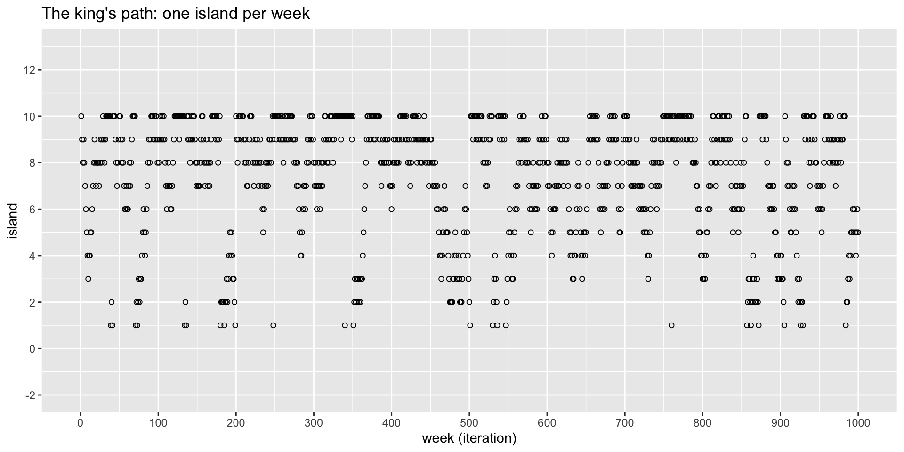
Maximum likelihood finds the summit
Bayes wants the whole map: where the high ground is, and how much of it there is
With 2 parameters we can draw it. With 50 (a typical multilevel model) nobody can: we’re exploring in the dark
A hiker in the fog
The hiker sees only the ground underfoot. One rule: step somewhere nearby; if it’s higher, go; if it’s lower, go only sometimes.
The hiker never sees the map, yet the footprints pile up where the land is high, in proportion to its height. The footprints are the posterior draws. That’s MCMC.
Born at Los Alamos, used everywhere
1953: Nicholas Metropolis, Arianna and Marshall Rosenbluth, and Augusta and Edward Teller needed to average over more arrangements of atoms than could ever be listed. On MANIAC, one of the first computers, they used the hiker’s rule: wander, preferring likely states. (Arianna Rosenbluth wrote the code.)
1970: Hastings generalized it. 1990: Gelfand and Smith showed statisticians it made Bayesian models practical, and Bayesian statistics took off
Named one of the top 10 algorithms of the 20th century
Still everywhere, because it works when the landscape is too big to map: physicists estimating the parameters of the universe from the cosmic microwave background, biologists reconstructing evolutionary trees, epidemiologists estimating the effects of COVID-19 lockdowns, election forecasters, and every brm() you run
Markov Chain Monte Carlo
Markov Chain: random process that moves between states, where the next state depends only on the current state. This is the “memoryless” property: given where you are now, where you were before adds nothing. (Draws are still correlated with earlier draws through the chain, which is why we’ll check autocorrelation.)
Monte Carlo: Famous casino in Monaco. Used here to refer to repeated random sampling, like tossing dice
In the limit, the samples generated by the MCMC method will be samples from the target (posterior in our case) distribution. Note that the shape of the posterior does not have to be defined by a known probability distribution – it can take any shape.
MCMC
Refers to a series of different algorithms. Metropolis, Gibbs, Hamiltonian are the most popular and historically relevant.
Stan (and thus brms) uses Hamiltonian
JAGS (in Kruschke’s DBDA) stands for Just Another Gibbs Sampler
BUGS (Bayesian inference Using Gibbs Sampling) was the standard tool in the 1990s and 2000s
Metropolis
Steps of algorithm:
Sample a value of \(\theta\)
Propose a new value centered on old + noise N(0, \(\sigma\) )
Calculate likelihood*prior of proposal
Divide the proposal’s value by the current value: the acceptance ratio
Draw a random number from runif(1)
If the random number is less than the ratio, move to the proposal; otherwise stay. (Uphill moves, ratio > 1, are always accepted; downhill moves only sometimes.)
Metropolis, step by step (1)
Now the side view: one parameter along the bottom, and height (likelihood × prior) on the y-axis. Same idea, same hiker.
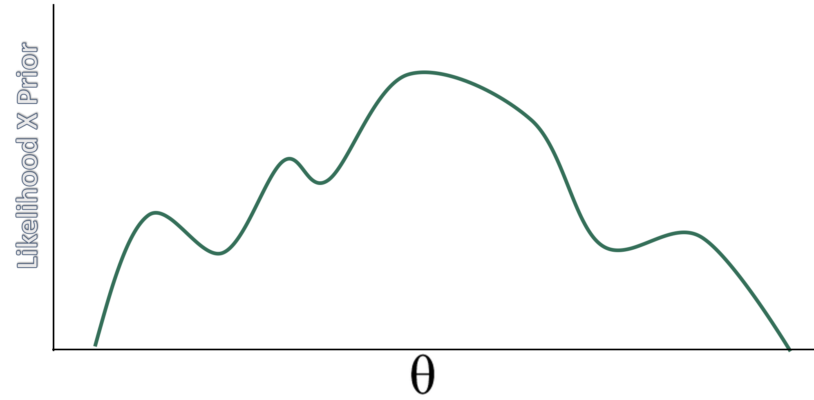
Metropolis, step by step (2)
Start somewhere, anywhere. (Stan picks random starting values for you.)
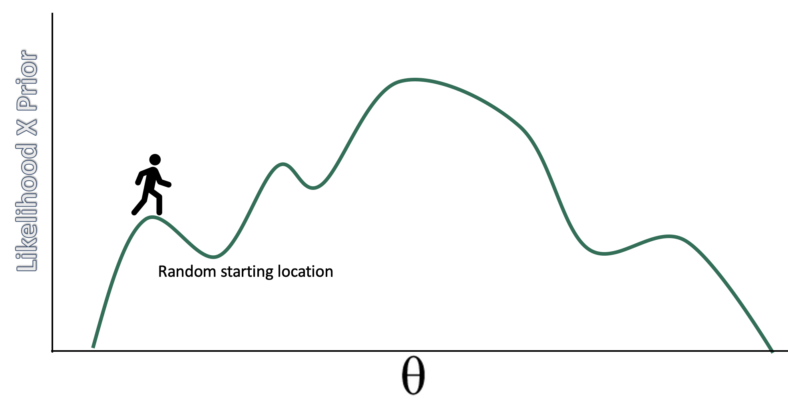
Metropolis, step by step (3)
Propose: new θ = current θ + a random nudge, e.g. Normal(0, step size). Here the nudge happens to land downhill.
Ratio: height there ÷ height here (the two horizontal lines) = 0.24 / 0.34 ≈ 0.7
Decide: draw runif(1). Below 0.7, move; otherwise stay put and record this spot again. So this downhill move happens 70% of the time.
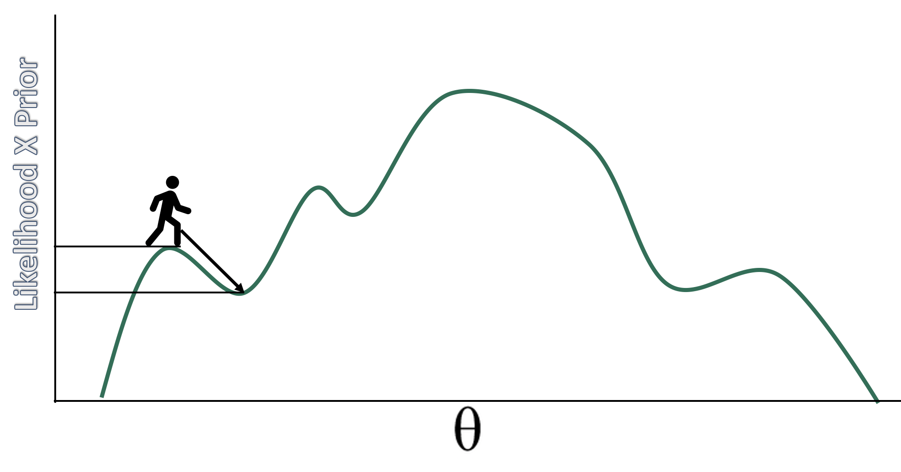
Metropolis, step by step (4)
Another proposal, this time uphill: ratio = 0.58 / 0.34 ≈ 1.7
Every runif(1) is below 1.7, so uphill moves always happen
Repeat thousands of times. The hiker spends time in each place in proportion to its height, and the recorded spots are the posterior draws.
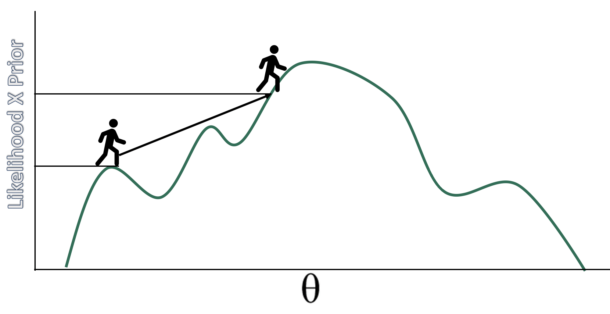
Metropolis, step by step (5)
Step size = how big the random nudge is, and it matters
Too small: almost every proposal is accepted, but the hiker inches along and rarely makes it across a valley to another hill
Too big: proposals often land far down in low ground (like this one) and get rejected, so the hiker stands still a lot
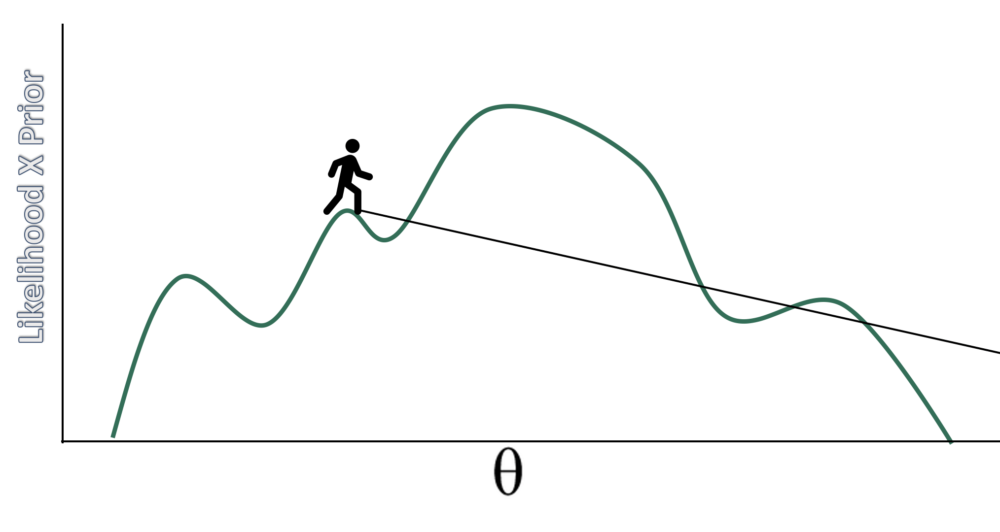
Metropolis in 15 lines
The hiker’s rule on the smallest possible landscape. McElreath’s King Markov (SR 9.1): 10 islands in a ring, island k has population proportional to k, and the king wants to visit each island in proportion to its population. Each week he flips a coin to propose a neighbor and moves with probability (proposal population / current population). The islands are the possible values of θ; population is the height (likelihood × prior).
Code
set.seed(9)num <-1000positions <-rep(0, num) current <-10for (i in1:num) {# record current position positions[i] <- current# flip a coin to propose a neighboring island proposal <- current +sample(c(-1, 1), size =1)# the islands form a ring: 1 and 10 are neighborsif (proposal <1) proposal <-10if (proposal >10) proposal <-1# move with probability proposal / current (always move "uphill") prob_move <- proposal/current current <-ifelse(runif(1) < prob_move, proposal, current)} library(tidyverse)tibble(week =1:1000,iteration = positions) %>%ggplot(aes(x = week, y = iteration)) +geom_point(shape =1) +scale_x_continuous(breaks =seq(from =0, to =1000, by =100)) +scale_y_continuous(limits =c(-2, 13), breaks =seq(from =-2, to =15, by =2)) +coord_cartesian(xlim =c(0, 1000)) +labs(title ="The king's path: one island per week") +xlab("week (iteration)") +ylab("island")
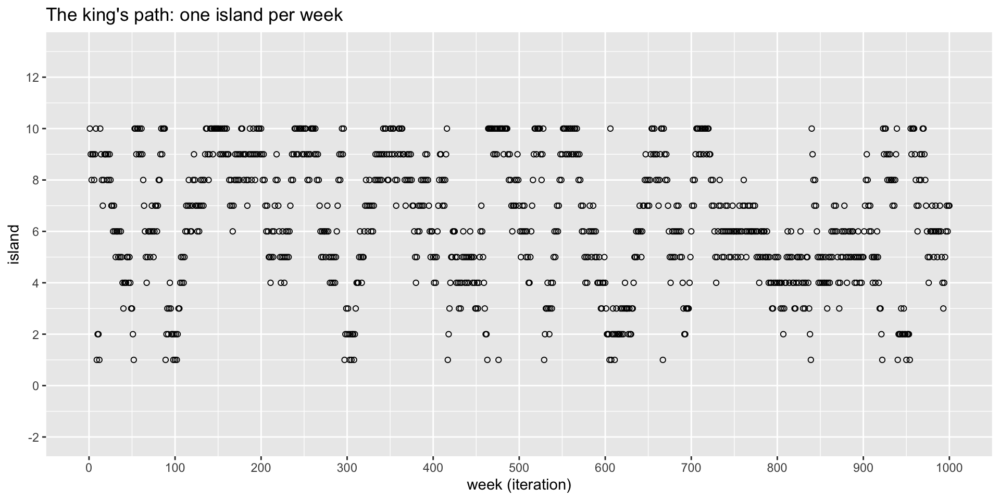
Did the king hit his target?
Orange: the target. Island 10 has 10× the people of island 1, so it should get 10× the weeks (18% vs 2%). Grey: the share of weeks the king actually spent there.
Code
tibble(island = positions) %>%count(island) %>%mutate(share = n /sum(n), target = island /sum(1:10)) %>%ggplot(aes(x = island)) +geom_col(aes(y = share), fill ="grey70") +geom_point(aes(y = target), colour ="#D55E00", size =3) +scale_x_continuous(breaks =1:10) +labs(y ="share of weeks", title ="after 1,000 weeks") +theme_classic(base_size =13)
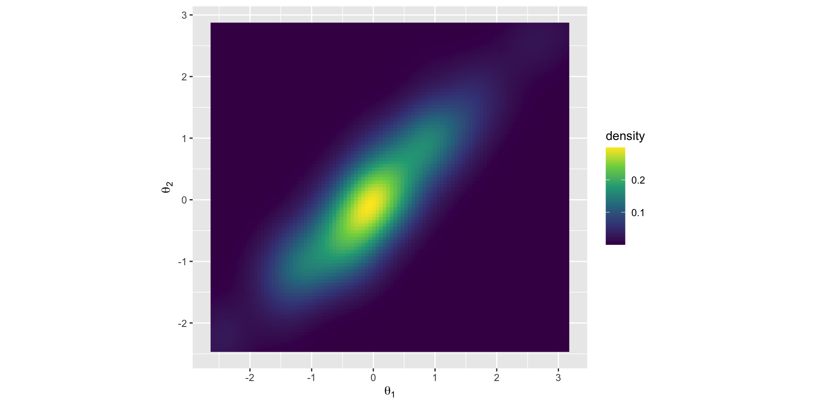
1,000 weeks is about 19 years of island hopping, and the king never computed those percentages; he only compared neighbors
Close but not exact. As the number of weeks grows, the grey bars get closer and closer to the orange target
Metropolis on a real posterior
Galton’s children’s heights again, estimating the mean μ (σ fixed at 2.5 to keep it one-dimensional) with lecture 1’s prior, μ ~ Normal(66, 5). Same recipe as the king, with a continuous “island”:
heights <- psychTools::galton$childlog_post <-function(mu) sum(dnorm(heights, mu, 2.5, log =TRUE)) +dnorm(mu, 66, 5, log =TRUE)set.seed(27)chain <-numeric(5000)current <-60# a deliberately bad startfor (i in1:5000) { proposal <- current +rnorm(1, 0, 0.2) # a small random stepif (log(runif(1)) <log_post(proposal) -log_post(current)) current <- proposal # ratio, on the log scale chain[i] <- current}
Comparing on the log scale (a difference instead of a ratio) avoids the tiny-number problem from lecture 1.
Did it find the posterior?
Code
library(patchwork)# exact posterior for a normal mean with known sigma (conjugate)post_prec <-length(heights) /2.5^2+1/5^2post_mean <- (sum(heights) /2.5^2+66/5^2) / post_precp.trace <-tibble(iteration =1:5000, mu = chain) %>%ggplot(aes(iteration, mu)) +geom_line(linewidth = .3) +annotate("rect", xmin =0, xmax =1000, ymin =-Inf, ymax =Inf, alpha = .15, fill ="#D55E00") +labs(y =expression(mu), subtitle ="shaded: warmup, discarded") +theme_classic(base_size =13)p.dens <-tibble(mu = chain[-(1:1000)]) %>%ggplot(aes(mu)) +geom_histogram(aes(y =after_stat(density)), bins =40, fill ="grey75", colour ="white") +stat_function(fun = dnorm, args =list(post_mean, 1/sqrt(post_prec)), colour ="#0072B2", linewidth =1) +labs(x =expression(mu), y =NULL, subtitle ="grey: 4,000 draws · blue: the exact posterior") +theme_classic(base_size =13)p.trace | p.dens
The chain walks from its bad start to the posterior (that walk is what warmup throws away), then wanders around it. Its draws match the exact answer.
Multivariate posterior distributions
Posteriors are not simple hill climbing exercises, instead they represent high dimensional spaces. These high dimensional spaces make it such that there is a lot of space to explore.
To visualize posteriors we usually “marginalize” them: look at one parameter at a time, averaged over all the others.
Joint and marginal distributions
Raw data here (friends and health), but the idea is the same for a posterior: the scatter is the joint distribution; the curves on the edges are the marginals.
Code
data <-read.csv("week3.csv") %>%# also at https://josh-jackson.github.io/bayes27/week3.csvselect(-ID, -SES)library(ggExtra)p <-ggplot(data, aes(x=friends, y=health)) +geom_point() +theme(legend.position="none")p2 <-ggMarginal(p, type="density")p2
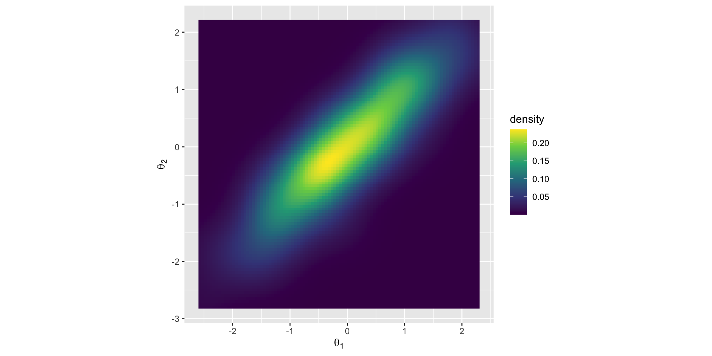
A correlated posterior
Code
samples =200r =0.93cor.dat = MASS::mvrnorm(n=samples, mu=c(0, 0), Sigma=matrix(c(1, r, r, 1), nrow=2), empirical=TRUE)X = cor.dat[, 1] # standard normal (mu=0, sd=1)Y = cor.dat[, 2] # standard normal (mu=0, sd=1)cor <-tibble(X,Y)cor %>%ggplot(aes(x = X, y = Y, fill =after_stat(density))) +stat_density_2d(geom ="raster", contour = F) +scale_fill_viridis_c(option ="D") +labs(x =expression(theta[1]),y =expression(theta[2])) +coord_equal()
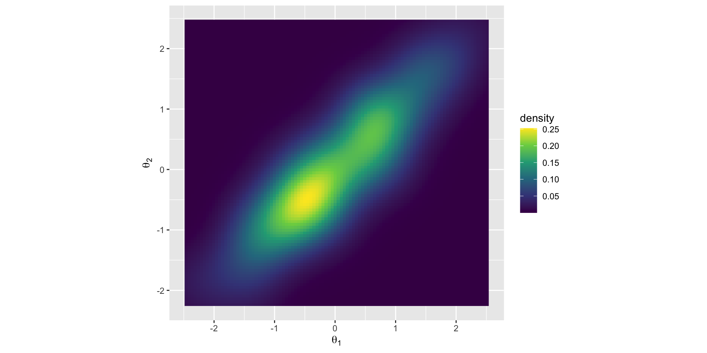
Gibbs
To explore a high dimensional space we need to be savvy about our proposals. Especially, when we are drawing samples for each parameter given a specific value of another parameter.
Gibbs updates one parameter at a time, drawing it directly from its distribution given the current values of all the others (its “full conditional”). Every draw is accepted, so there’s no wasted guess-and-check.
Usually faster than Metropolis (and good enough for many regressions), but it needs those conditional distributions to be easy to sample from, which in practice means conjugate priors.
When Gibbs and Metropolis struggle
Both struggle when parameters are strongly correlated, like the posterior below: moving one parameter at a time (Gibbs) or with small random steps (Metropolis) creeps slowly along the narrow ridge. Metropolis also needs its step size tuned: too small and it takes forever to explore, too large and most proposals are rejected.
Concentration of measure
With many parameters, guess and check (Metropolis) becomes very inefficient: most proposals get rejected, or the chain keeps re-exploring the same ground.
The reason is surprising. Think of where people live in a city. Downtown has the most people per block, but downtown is small. The suburbs are less crowded, but they cover far more area, so most people live in the suburbs.
A posterior works the same way. How much probability a region holds depends on two things: how high the posterior is there (how crowded), and how many combinations of parameter values the region contains (how big). The mode is downtown: the highest point, but only a tiny sliver of all the combinations is near it. With many parameters, most of the probability, and so most of the sampler’s time, ends up in the “suburbs”, away from the mode.
Where the space is (1)
One parameter: the middle third of the range is 1/3 of the space.
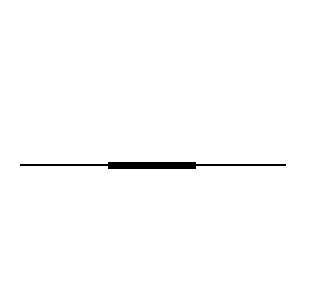
Where the space is (2)
Two parameters: the middle square is 1/9 of the space.
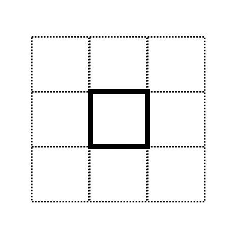
Where the space is (3)
Three parameters: the middle cube is 1/27. With 10 parameters it’s 1/59,049 (0.002%). Almost all the space is out toward the edges.
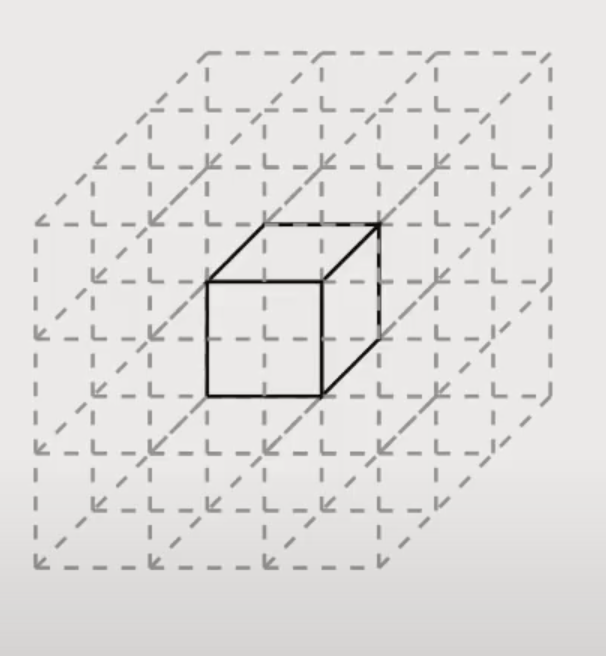
Near the peak, all at once?
Say each parameter is normal (and independent, to keep it simple). One parameter is within 1 SD of its peak in 68% of draws. To be near the mode of the whole model, every parameter has to be within 1 SD at once.
Code
within_1sd <-pnorm(1) -pnorm(-1) # 0.68tibble(parameters =1:25, share = within_1sd^parameters) %>%ggplot(aes(parameters, share)) +geom_line(colour ="#0072B2", linewidth =1) +geom_point(colour ="#0072B2") +scale_y_continuous(labels = scales::percent) +labs(x ="number of parameters", y ="draws with every\nparameter within 1 SD") +theme_classic(base_size =13)
10 parameters: 2% of draws (a typical draw has about 3 parameters out past 1 SD). 100 parameters: about 1 in 40 quadrillion
So you’ll never see a draw near the mode, though it’s the single most likely point. The draws live in a band away from it, and that’s where the sampler has to work
Why that breaks the hiker
From a spot in that band, almost every random direction leads off it, mostly outward to low ground. So most Metropolis proposals get rejected. Here is Metropolis on a normal posterior, same step size (0.5 SD) every time:
The usual fix: shrink the steps as the number of parameters grows. Then proposals are accepted, but the hiker inches along and successive draws are nearly identical
What we want instead: a sampler that knows which way the band curves, so it can take long steps and stay on it
Hamiltonian MCMC
Flip the landscape upside down. The high ground (plausible values) becomes the bottom of a bowl. (Technically the bowl is the negative log posterior; for a normal posterior it’s a smooth bowl.)
Flick a puck. Each iteration, give a puck a random flick: random direction, random speed. It glides across the frictionless bowl, speeding up as it slides toward plausible values and slowing as it climbs toward implausible ones. The random flick is what keeps this a sampler: every flick sends the puck somewhere new.
Record where it stops. After a set amount of glide time, freeze the puck and record its spot as the next draw. (How long to glide? Stan picks that automatically: NUTS, later.)
Because the puck follows the shape of the bowl, it can travel far and still land somewhere plausible, so almost every flick is accepted. (The glide is simulated in small steps, so there’s still a quick check for errors.)
What the gradient is for
To simulate the glide, the computer needs the slope of the bowl where the puck is right now: which way is downhill, and how steep. That slope is the gradient
Optimizers (maximum likelihood: lm(), glm(), lme4) use the same gradient to slide straight to the bottom and stop. One answer, no distribution
HMC uses it differently: the flicked puck glides back and forth across the bowl, and the spots where it’s recorded are draws from the whole posterior
Same ingredient, two goals: find the best point (optimization) vs. map the whole posterior (sampling)
The puck on our landscape
The same curved posterior the hiker explored. Each orange path is one flick; the dot is where the puck was frozen and recorded.
Code
# slope of the log posterior (the gradient), worked out by hand for this landscapegradient <-function(q) { r <- q[2] -0.6* q[1]^2+1c(-q[1] /1.44+ r /0.36*1.2* q[1], -r /0.36)}set.seed(4)n_flicks <-1000; step <-0.05; n_steps <-70# glide time = 70 small stepshere <-c(1.5, 0.3); draws <-matrix(NA, n_flicks, 2); glides <-list()for (i in1:n_flicks) { speed <-rnorm(2) # the random flick q <- here; p <- speed; trail <-matrix(NA, n_steps +1, 2); trail[1, ] <- q p <- p + step /2*gradient(q) # simulate the glide (leapfrog)for (s in1:n_steps) { q <- q + step * p; trail[s +1, ] <- qif (s < n_steps) p <- p + step *gradient(q) } p <- p + step /2*gradient(q) energy_before <--log_target(here[1], here[2]) +sum(speed^2) /2 energy_after <--log_target(q[1], q[2]) +sum(p^2) /2if (log(runif(1)) < energy_before - energy_after) here <- q # the quick error check draws[i, ] <- hereif (i <=5) glides[[i]] <-as_tibble(trail, .name_repair =~c("x", "y")) %>%mutate(flick = i)}glides <-bind_rows(glides)draws <-as_tibble(draws, .name_repair =~c("x", "y"))(base +geom_path(data = glides, aes(group = flick), colour ="#D55E00") +geom_point(data = glides %>%group_by(flick) %>%slice_tail(n =1), colour ="#D55E00", size =2.5) +labs(subtitle ="the first 5 flicks")) |(base +geom_point(data = draws, alpha = .15, size = .6, colour ="#0072B2") +labs(subtitle ="1,000 flicks"))
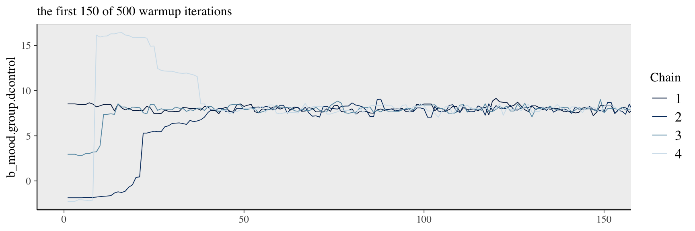
Each flick travels across much of the ridge, so successive draws are far apart. A flick costs more computing than a footstep (70 small steps, each needing the gradient), but 1,000 flicks map the ridge about as well as the hiker’s 5,000 footprints.
Visualize H-MCMC
chi-feng.github.io/mcmc-demo: try Random Walk Metropolis vs. Hamiltonian Monte Carlo on the “banana” or “donut” target.
Gradients and autodiff
Simulating the glide means computing the gradient (one slope per parameter) at every small step of every flick. For a model with 50 parameters and thousands of flicks, that’s millions of derivatives.
Stan computes them exactly and automatically from your model code (automatic differentiation, or “autodiff”). You never write a derivative, and that’s what makes HMC practical.
One consequence: the slope has to exist, so Stan’s parameters must be continuous. (No discrete parameters, like “which of 3 groups is this person in?”, unless you average over them.)
We still never compute the evidence integral. At each small step the puck only needs the height and slope where it is right now, and the recorded spots give us the full posterior.
Can we ensure accurate posteriors?
Two key points:
It is iterative, does not create the posterior distribution, instead it results in samples.
It is stochastic. This means you won’t get the same result each time (unless you set a seed).
So we need to make sure that the algorithm “works” in that there are enough samples to get a good picture of the posterior, and that the samples will replicate across different attempts.
How many iterations do you need?
More iterations = more precise Monte Carlo estimates of the same posterior (not a narrower posterior). Usable draws = (iterations − warmup) × chains
Effective sample size: roughly the number of draws divided by (1 + 2 × the sum of the autocorrelations), i.e., how many independent draws your correlated draws are worth. It can even exceed the number of draws when successive draws are negatively correlated (this is good!). Referred to as Bulk_ESS in brms
Tail_ESS is similar but it is used more for CIs. The convergence of Markov chains are not uniform across the parameter. Central tendency estimates should use Bulk_ESS, whereas for intervals (the tails) look at Tail_ESS.
How much is enough? Rule of thumb: Bulk_ESS and Tail_ESS above about 400 (≈100 per chain with 4 chains) for every parameter you report (Vehtari et al., 2021).
A model to diagnose
Code
library(tidyverse)library(brms)week3 <-read.csv("week3.csv") %>%# also at https://josh-jackson.github.io/bayes27/week3.csv dplyr::select(-ID, -SES) %>%mutate(mood.group.d =factor(mood.group) %>%fct_recode("control"="0", "tx"="1", "tx"="2"))h.3<-brm(family = gaussian, health ~0+ mood.group.d,prior =c(prior(normal(0, 10), class = b),prior(cauchy(0, 10), class = sigma)),data = week3,iter =1000, warmup =500, chains =2, cores =2,backend ="cmdstanr",file ="h.3")summary(h.3)
Family: gaussian
Links: mu = identity
Formula: health ~ 0 + mood.group.d
Data: week3 (Number of observations: 200)
Draws: 2 chains, each with iter = 1000; warmup = 500; thin = 1;
total post-warmup draws = 1000
Regression Coefficients:
Estimate Est.Error l-95% CI u-95% CI Rhat Bulk_ESS Tail_ESS
mood.group.dcontrol 7.98 0.35 7.25 8.66 1.00 858 677
mood.group.dtx 8.78 0.24 8.29 9.21 1.00 882 656
Further Distributional Parameters:
Estimate Est.Error l-95% CI u-95% CI Rhat Bulk_ESS Tail_ESS
sigma 2.83 0.14 2.57 3.10 1.00 1086 609
Draws were sampled using sample(hmc). For each parameter, Bulk_ESS
and Tail_ESS are effective sample size measures, and Rhat is the potential
scale reduction factor on split chains (at convergence, Rhat = 1).
Autocorrelation within each chain
Code
library(bayesplot)mcmc_acf(h.3, pars =c("b_mood.group.dcontrol", "b_mood.group.dtx", "sigma"))
Each bar is the correlation between a draw and the draw lag steps later, within a chain. Here it drops to about 0 after a lag or two: the draws are nearly independent, so ESS is close to the number of draws.
How many chains do you need?
Enough to check convergence: several chains from different starting points should end up describing the same distribution.
More chains cost more warmup (each chain throws its own away), and they only run in parallel if you have the cores.
The Stan team suggests that 4 chains are adequate for checking convergence. brms defaults are iter = 2000 and warmup = 1000 which yields 4000 usable posterior samples ((iter - warmup) * chains).
When setting up models: one short chain to debug, four chains for verification and inference
Checking convergence
Convergence is to a target distribution (the required posterior), not to a single value as in ML methods.
First step is to look for fuzzy caterpillars (mixing, stationarity, and convergence) in the trace plots. Note that our warm up samples are not visualized.
What warmup does
The same model, four chains started far apart, keeping the warmup draws this time:
Code
h.3w <-update(h.3, save_warmup =TRUE, chains =4, cores =4, init =10, seed =27, file ="h.3w")mcmc_trace(as_draws_array(h.3w, inc_warmup =TRUE), pars ="b_mood.group.dcontrol",n_warmup =500, window =c(0, 150)) +labs(subtitle ="the first 150 of 500 warmup iterations")
The chains start in different places and find the same region within a few dozen steps. Warmup also tunes the step size; its draws are thrown away. R-hat asks whether the chains, after warmup, agree.
Trace plots
Code
plot(h.3)
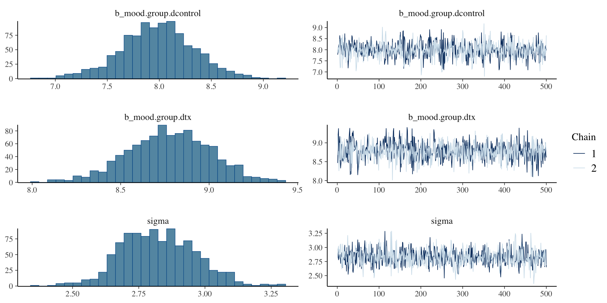
Rank plots
A more sensitive check than trace plots: pool all draws, rank them, then plot each chain’s ranks as a histogram. If the chains are exploring the same distribution, every chain’s histogram is roughly flat (each chain gets its fair share of low, middle, and high values).
Code
mcmc_rank_overlay(h.3, pars =c("b_mood.group.dcontrol", "b_mood.group.dtx", "sigma"))
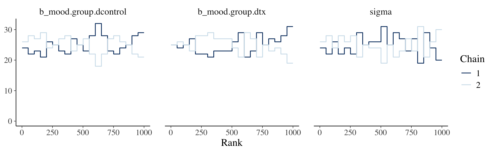
A chain whose histogram bulges at one end is stuck in part of the posterior, even if its trace plot looks like a fuzzy caterpillar.
R-hat
Compares the variance between chains to the variance within chains (brms reports the improved rank-normalized, split version).
1 indicates that the chains agree.
Current recommendation: R-hat < 1.01 for every parameter (Vehtari et al., 2021). Older rules of thumb used 1.1 or 1.05; brms warns above 1.05.
Fixing wild chains
In roughly this order:
Check the model: vague priors, redundant or poorly identified parameters, a likelihood that doesn’t fit the data
Run longer: more warmup and iterations (helps R-hat and ESS when the model is fine but mixing is slow)
Adjust the sampler:adapt_delta, max_treedepth (a last resort, after the model is right)
Which warning, which fix? (1)
Warning
What it means
Usual cause
First things to try
R-hat > 1.01
chains disagree
too short a run; a multimodal or poorly identified posterior
more warmup/iterations; check the model (priors, redundant parameters)
Low Bulk/Tail ESS
too few effectively independent draws
high autocorrelation, often from strongly correlated parameters
more iterations; reparameterize or remove redundancy
Which warning, which fix? (2)
Warning
What it means
Usual cause
First things to try
Divergent transitions
the sampler hit regions it can’t follow; results may be biased
sharp curvature: tiny data with vague priors, funnels in multilevel models
better priors; adapt_delta = .95 or .99; non-centered parameterization
Max treedepth
the sampler took the longest allowed trajectories; an efficiency warning
fix the model first; then max_treedepth = 12 or more
Rule of thumb: divergences and non-identified models need a model fix; sampler settings are a last resort.
Divergent transitions
Because this is a physics simulation, we can examine the “energy” of the hockey puck to see if our simulation goes wrong. This is a good property of H-MCMC; similar properties do not exist for other algorithms.
A deliberately bad model: two data points (−1 and 1) with absurdly vague priors (an SD of 1,000 on the mean, and a σ prior with a mean of 10,000).
Code
div.t <-brm(data =list(y =c(-1, 1)), family = gaussian, y ~1,prior =c(prior(normal(0, 1000), class = Intercept),prior(exponential(0.0001), class = sigma)),iter =2000, warmup =1000, chains =2,backend ="cmdstanr",file ="div.t")
A model with divergences
Code
summary(div.t)
Family: gaussian
Links: mu = identity
Formula: y ~ 1
Data: list(y = c(-1, 1)) (Number of observations: 2)
Draws: 2 chains, each with iter = 2000; warmup = 1000; thin = 1;
total post-warmup draws = 2000
Regression Coefficients:
Estimate Est.Error l-95% CI u-95% CI Rhat Bulk_ESS Tail_ESS
Intercept 6.20 318.21 -710.59 787.51 1.39 303 171
Further Distributional Parameters:
Estimate Est.Error l-95% CI u-95% CI Rhat Bulk_ESS Tail_ESS
sigma 541.60 1344.69 6.40 4440.09 1.51 4 9
Draws were sampled using sample(hmc). For each parameter, Bulk_ESS
and Tail_ESS are effective sample size measures, and Rhat is the potential
scale reduction factor on split chains (at convergence, Rhat = 1).
legs.1<-brm(height ~1+ leg_left + leg_right, data = legs,iter =400, warmup =100, chains =4, cores =4, seed =5,backend ="cmdstanr", file ="legs.1") # brms default (flat) priors on the slopes
Non-identified: the symptoms
Code
summary(legs.1)
Family: gaussian
Links: mu = identity
Formula: height ~ 1 + leg_left + leg_right
Data: legs (Number of observations: 100)
Draws: 4 chains, each with iter = 400; warmup = 100; thin = 1;
total post-warmup draws = 1200
Regression Coefficients:
Estimate Est.Error l-95% CI u-95% CI Rhat Bulk_ESS Tail_ESS
Intercept 1.79 0.27 1.28 2.31 1.00 1524 1069
leg_left 0.59 2.24 -3.74 5.20 1.06 147 157
leg_right 1.25 2.24 -3.39 5.59 1.06 147 157
Further Distributional Parameters:
Estimate Est.Error l-95% CI u-95% CI Rhat Bulk_ESS Tail_ESS
sigma 0.60 0.04 0.53 0.70 1.01 590 746
Draws were sampled using sample(hmc). For each parameter, Bulk_ESS
and Tail_ESS are effective sample size measures, and Rhat is the potential
scale reduction factor on split chains (at convergence, Rhat = 1).
R-hat above 1.01, ESS around 150, and each leg slope’s interval runs from about −4 to +5 even though leg length obviously predicts height. Look at the shape to see why.
Non-identified: the shape
Code
mcmc_scatter(legs.1, pars =c("b_leg_left", "b_leg_right"), alpha = .3)
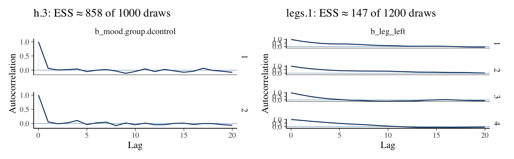
The data only pin down the sum of the two slopes, so the posterior is a long, thin ridge. Running longer maps the ridge more thoroughly but can’t make it narrower: fix the model (drop or combine the duplicate, or give the slopes real priors).
Autocorrelation and ESS, side by side
Code
ess_of <-function(m, par) round(posterior::ess_bulk(posterior::extract_variable_matrix(as_draws_array(m), par)))(mcmc_acf(h.3, pars ="b_mood.group.dcontrol") +labs(title =paste0("h.3: ESS ≈ ", ess_of(h.3, "b_mood.group.dcontrol"), " of ", ndraws(h.3), " draws"))) |(mcmc_acf(legs.1, pars ="b_leg_left") +labs(title =paste0("legs.1: ESS ≈ ", ess_of(legs.1, "b_leg_left"), " of ", ndraws(legs.1), " draws")))
On a ridge, each draw is close to the last one: high autocorrelation, so 1,200 draws are worth far fewer independent ones.
Estimate l-95% CI u-95% CI Rhat Bulk_ESS
Intercept 1.80 1.22 2.35 1 4574
leg_left 1.84 1.72 1.96 1 4527
Leap Frog steps and NUTS
Need to figure out the correct 1) step size (time interval) and 2) number of leap frog steps (the small steps of each glide, where the gradient is calculated).
Step size is done through warm up samples.
Number of steps is done with NUTS, the No U-Turn Sampler. It extends the puck’s path (forward and backward in time) until the path starts to double back on itself, a “U-turn”, so each region gets as many steps as it needs and no more.
Fixing divergences: adapt_delta
If dealing with divergent transitions, increasing the acceptance probability during warm up will result in smaller steps (smaller time interval) and a longer sampling time (but more robust sampling).
Code
h.3<-brm(family = gaussian, health ~0+ mood.group.d,prior =c(prior(normal(0, 10), class = b),prior(cauchy(0, 10), class = sigma)),data = week3,iter =1000, warmup =500, chains =2, cores =2, control =list(adapt_delta = .95), # default is .8 file ="h.3_adapt") # a new file name, or brms just loads the old fitsummary(h.3)
tree depth
Divergent transitions are a validity concern, hitting the maximum treedepth is an efficiency concern. When the maximum allowed tree depth is reached it means the H-MCMC sampler is terminating to avoid excessively long execution time. Treedepth is associated with steps via: 2^treedepth, with 2^10 = 1024 leapfrog steps the default.
Code
h.3<-brm(family = gaussian, health ~0+ mood.group.d,prior =c(prior(normal(0, 10), class = b),prior(cauchy(0, 10), class = sigma)),data = week3,iter =1000, warmup =500, chains =2, cores =2, control =list(max_treedepth =15), # default is 10file ="h.3_treedepth")summary(h.3)
Preview: divergences in multilevel models
The most common place you’ll see divergences is a multilevel model with few groups or a small between-group SD. If group effects are \(u_j \sim \text{Normal}(0, \tau)\), then when \(\tau\) is near 0 all the \(u_j\) are squeezed near 0, and the posterior takes a funnel shape that HMC can’t follow with one step size.
The standard fix is the non-centered parameterization: sample standardized effects and scale them,
Same model, different geometry: the \(z_j\) don’t get squeezed when \(\tau\) is small. brms already does this for you (you’ll see it in stancode() in the multilevel weeks), but knowing why helps when you write your own Stan code.
Every time you fit a model
Read the warnings brms prints. Don’t ignore them
R-hat < 1.01 for every parameter
Bulk and Tail ESS > 400 for every parameter you report
Trace and rank plots: fuzzy caterpillars, flat rank histograms
Zero divergences. Any divergence means look at the model, not just adapt_delta
pp_check(): the model can sample well and still be the wrong model
If something fails: check the model first (priors, redundant parameters), run longer second, tune the sampler last.